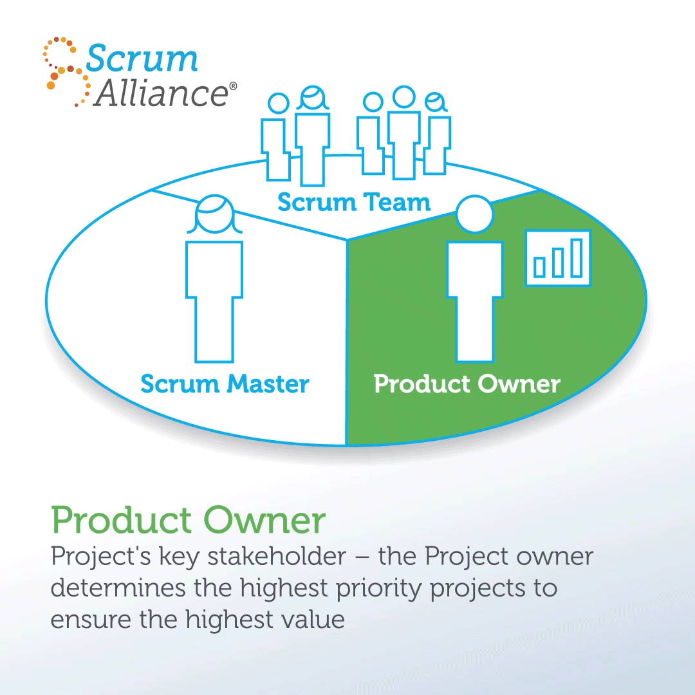
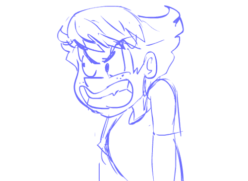
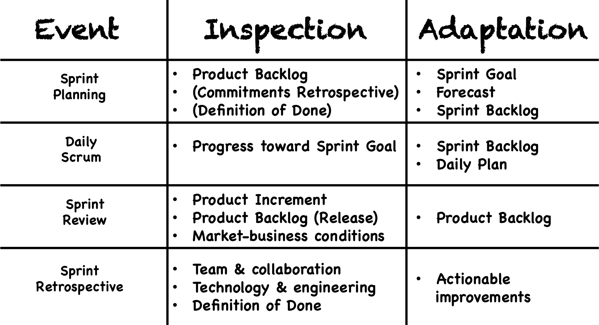
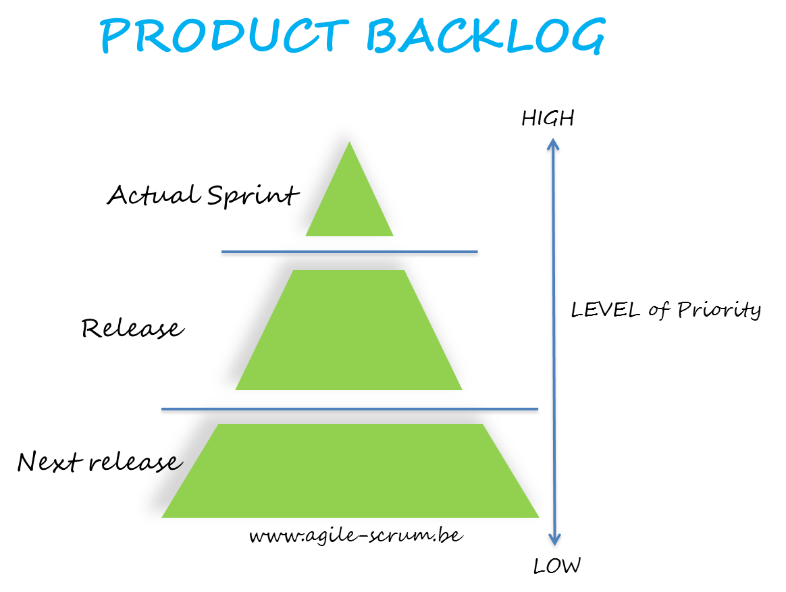
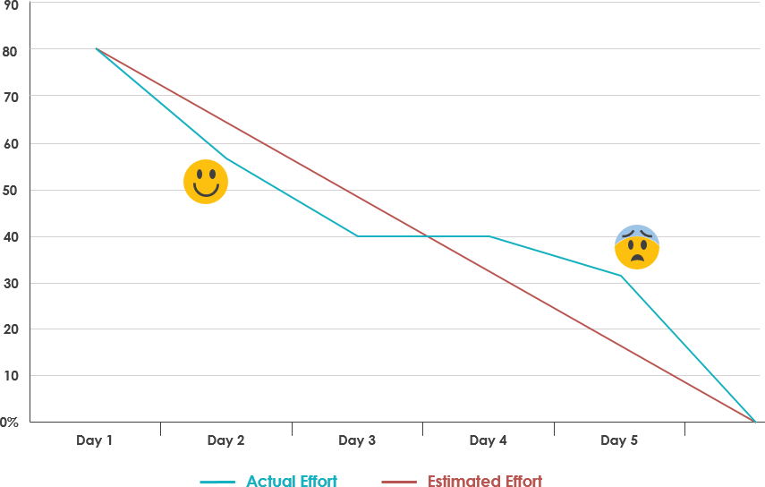
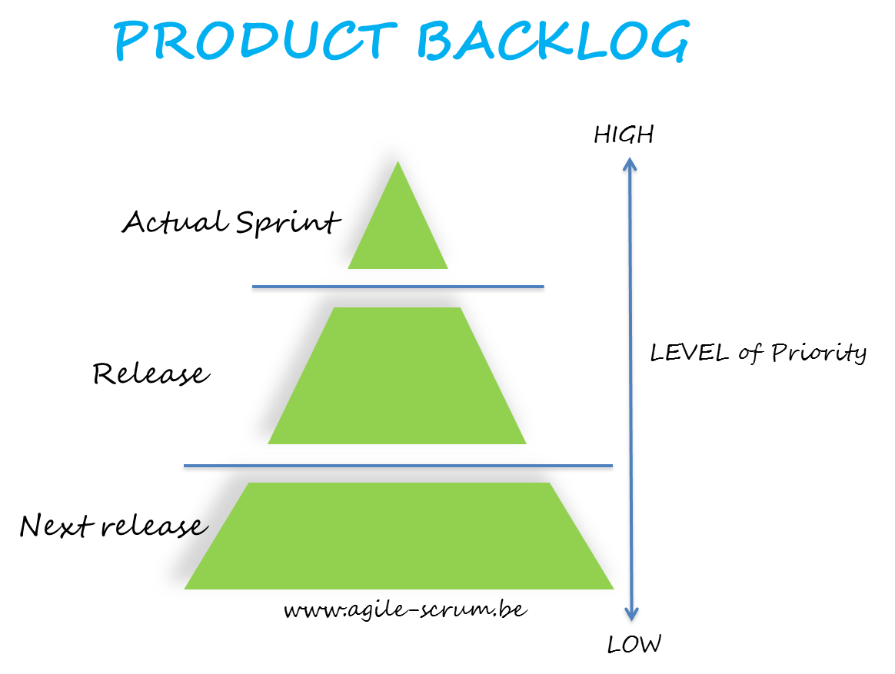

Scrum Deep Dive
-
De oorsprong van Scrum
-
Wat is Scrum? Waar komt het vandaan? Waarom is het ontstaan?
- Scrum is een framework of methodiek die door Jeff Sutherland en Ken Schwaber in de vroege jaren 90 tot stand is gekomen. Dit framework is gebaseerd op empirisme, dit is een theorie die er vanuit gaat dat kennis onstaat uit ervaringen en dat beslissingen worden genomen op basis van wat bekend is.
- De naam 'Scrum' komt voort uit een paper geschreven door Takeuchi en Nonaka, 2 erkende management-denkers. Zij verwezen naar de sport rugby, waarbij het belang van teamwork werd benadrukt.
- Scrum is ontstaan uit frustratie waarom het zo moeilijk was om projecten succesvol af te ronden. 
-
Hoe staat Scrum in relatie tot Agile werken?
- Scrum is een manier van werken, met behulp van de Agile techniek wordt er gestreefd naar een zo’n effectief en flexibel mogelijke werkwijze. In een organisatie wordt een team opgesteld die gebruik maakt van deze methode, waarbij projecten op een zeer productieve wijze stapsgewijs worden opgeleverd.
-
Waarom is Scrum specifiek zo geschikt voor development werken?
- Scrum wordt vaak gebruikt bij software of producten waarvan de klant of gebruiker nog niet goed weet wat hij wil en waarbij men al doende leert om de eisen en wensen beter te beschrijven en in bruikbare software of producten om te zetten. Vaak weet men pas wat men wil als men het prototype ziet en dan worden alsnog de eisen aangepast. Scrum heeft de flexibiliteit om met laat-wijzigende eisen en wensen om te gaan.
-
-
Scrum rollen

Bij scrum kent men drie hoofdrollen.-
Scrummaster
De scrummaster begeleidt en helpt het team door ervoor te zorgen dat het juiste scrumproces gevolgd wordt. Hij verzorgt ook eventuele trainingen. De scrummaster regelt alle vergaderingen. Ook regelt hij de voorzieningen zoals een werkruimte, hardware en software. De scrummaster zorgt ervoor dat het team niet lastig gevallen wordt door derden die met extra eisen tussendoor komen of die bijvoorbeeld tijdelijk mensen nodig hebben uit het team. De scrummaster is geen projectmanager. Hij regelt bijvoorbeeld niet de personele zaken zoals selectie, beoordeling en beloning van de mensen. Dit bevordert de openheid en samenwerking. -
Ontwikkelteam / expertteam
Het ontwikkelteam is multidisciplinair samengesteld en is verantwoordelijk voor het afleveren van de software of het product aan het einde van elke sprint. Het team bestaat meestal uit drie tot negen personen. Het team organiseert zichzelf. Zij doen de analyse, ontwerp, ontwikkeling, test en documentatie en zorgen dat er aan het eind van de sprint een kant-en-klaar product of werkende software is, dat in principe in productie genomen kan worden. -
Product owner
De product owner oftewel producteigenaar is de opdrachtgever of klant. Hij/zij heeft het meeste belang bij de software of het product dat gemaakt wordt. Hij of zij zorgt ervoor dat de rekening betaald wordt. Zij beheert ook de product backlog en bepaalt wat er moet gebeuren en in welke volgorde. In principe wordt begonnen met het belangrijkste, waar het meeste voordeel mee te behalen is, wat boven aan de product backlog staat.
-
-
Scrum events
-
Wat is "Retro" (Retrospective)?
De retrospective is de afsluiter van de scrum ceremonies. De prestaties van het Scrumteam worden geëvalueerd en er worden werkafspraken gemaakt om het werkproces te verbeteren. De sprint is hierbij afgerond en er wordt een nieuwe sprint planning gemaakt voor de volgende sprint. -
Wat is Refinement?
Volgens de Scrum Guide geeft de Product Backlog Refinement invulling aan de Product Backlog; details worden aangebracht, inschattingen worden gemaakt en de Product Backlog wordt geordend. Echter wordt geen duidelijkheid gegeven over de manier waarop de Product Backlog Refinement zou moeten plaatsvinden. Daarom krijgt het Scrum Team de verantwoordelijkheid te bepalen hoe en wanneer dit gebeurt. -
Wat is Standup?
Tijdens de daily standup meeting beantwoordt iedereen drie vragen:- Wat heb ik bereikt sinds de vorige daily standup?
- Wat ga ik vandaag bereiken?
- Verwacht ik obstakels, en kan het team me daarbij helpen?
De Daily Scrum, ook wel standup meeting of daily standup meeting genoemd, is een dagelijkse bijeenkomst van het Scrumteam van maximaal 15 minuten. Het is belangrijk dat deze tijdsduur nooit overschreven wordt. Het doel van de daily standup meeting is om werkzaamheden op elkaar af te stemmen en een plan te hebben voor de komende 24 uur. De tijd en plaats van de daily standup meeting zijn altijd hetzelfde.
-
-
Scrum artifacts
-
Wat is Product backlog?

- De Product Backlog in Scrum bestaat uit een lijst met items (User Stories) die uitgevoerd moeten worden tijdens de ontwikkeling van het product. Op de Product Backlog komen wijzigingen en uitbreidingen te staan die toegepast moeten worden op het product. De Product Owner maakt een indeling naar prioriteit, waarbij de meest belangrijke items bovenaan staan. Dat betekent dat deze taken als eerste worden opgepakt. Elk artefact bevat een Commitment om te zorgen voor transparante informatie die de focus naar het doel vergroot, voor de Product Backlog is dit de Product Goal.
-
Wat is Sprint backlog?

- De Sprint Backlog is een takenlijst die het Scrum team tijdens de sprint af moet werken. De items uit de Product Backlog worden door het team opgedeeld in taken. Dit gebeurt tijdens de Sprint planning meeting. Vervolgens worden deze taken (die op post-its worden genoteerd) opgehangen op het Scrum takenbord. Alle taken die in de ‘To Do’ kolom hangen bij de start van de sprint vormen dus de Sprint Backlog. Taken uit de Sprint Backlog worden niet toegewezen door bijvoorbeeld de Scrum Master, maar de teamleden overleggen zelf welke taken het meest urgent zijn en passen bij hun kennis en ervaring. Deze pakken ze vervolgens op.
-
Wat is een Burn down chart?

-
De burndown chart (ook wel burndown genoemd) levert de visuele informatie waarmee je je Agile project of
Scrum sprint
dagdagelijks kan managen. De burndown toont de resterende hoeveelheid werk van het totale project of de
huidige sprint.
Deze voortgang wordt inzichtelijk gemaakt met behulp van twee lijnen:
- Een “resterend werk” lijn
- Een “ideale” lijn
-
De burndown chart (ook wel burndown genoemd) levert de visuele informatie waarmee je je Agile project of
Scrum sprint
dagdagelijks kan managen. De burndown toont de resterende hoeveelheid werk van het totale project of de
huidige sprint.
Deze voortgang wordt inzichtelijk gemaakt met behulp van twee lijnen:
-
Wat is Product backlog?
